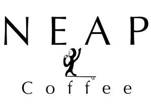

Trade Mark Journal No.2026/011 13 March 2026
UK00004346498 27 February 2026 (25,30,43)

A surfer in a wetsuit, on a surfboard drinking a coffee.
- Class 25
- Hoodies; Hooded sweatshirts; Sweatshirts; Hooded sweat shirts; Short-sleeved T-shirts; Hooded pullovers; Beanie hats; T-shirts; Beanies; Shirts; Casual shirts; Caps; Caps [headwear]; Caps being headwear; Baseball caps; Peaked caps; Hats.
- Class 30
- Coffee; Decaffeinated coffee; Iced coffee; Chocolate coffee; Coffee drinks; Coffee beans; Coffee beverages; Caffeine-free coffee; Coffee extracts for use as substitutes for coffee; Coffee beverages with milk; Flavoured coffee; Roasted coffee beans; Beverages with coffee base; Beverages with a coffee base; Espresso; Ground coffee; Coffee based drinks; Coffee in whole-bean form; Beverages made from coffee; Beverages made of coffee; Ground coffee beans; Coffee substitutes; Aerated drinks [with coffee, cocoa or chocolate base]; Coffee based beverages; Mixtures of coffee; Coffee mixtures; Cappuccino; Aerated beverages [with coffee, cocoa or chocolate base]; Prepared coffee and coffee-based beverages; Coffee concentrates; Coffee in brewed form; Coffee, teas and cocoa and substitutes therefor; Ice beverages with a coffee base; Prepared coffee beverages; Coffee [roasted, powdered, granulated, or in drinks]; Tea; Chai tea; Tea beverages with milk; Iced tea; Oolong tea; Rooibos tea; Chamomile tea; Tea (Iced -); Herbal tea; Peppermint tea; Black tea [English tea]; Tea beverages; Green tea; Tea bags for making non-medicated tea; Tea bags; Black tea; White tea; Teas; Iced tea (Non-medicated -); Iced teas; Beverages with tea base; Beverages with a tea base; Instant tea; Tea mixtures; Tea (Non-medicated -); Herbal tea [other than for medicinal use]; Instant green tea; Non-medicinal herbal tea; Tea bags (Non-medicated -); Instant white tea; Instant black tea; Fruit teas; Earl grey tea; Earl Grey tea.
- Class 43
- Cafe services; Café services; Coffee shop services; Mobile restaurant services; Snack-bar services; Bar and restaurant services; Coffee bar services; Bar services; Takeaway services; Mobile catering services; Outside catering services; Providing food and drink catering services for exhibition facilities; Coffee supply services for offices [provision of beverages]; Catering services for the provision of food and drink; Take-away food services; Providing food and drink catering services for convention facilities; Snack bar services; Takeaway food services; Providing food and drink catering services for fair and exhibition facilities; Catering services for educational establishments.
Jack Hayward